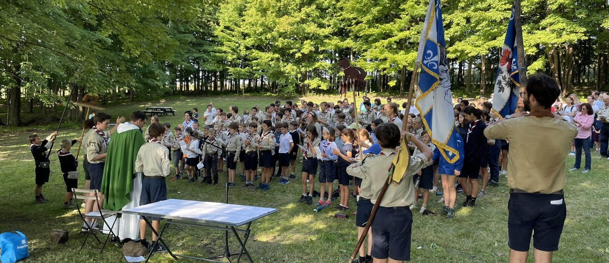

Qu'est-ce que le FNE ?
Notre mouvement Explorer propose une expérience de programme pour tous les sexes. Au sein de notre mouvement Explorer, nous faisons une distinction entre les hommes et les femmes, pour accompagner nos jeunes dans un développement conscient d'eux-mêmes et pour répondre aux besoins de chaque sexe, qu'ils soient physiologiques, physiques ou spirituels. Cette méthode éprouvée, fidèle à Baden-Powell, crée des personnalités équilibrées et constitue un environnement épanouissant et heureux qui complète la vie de famille, qui est par nature mixte, et la vie de notre société dans son ensemble.
FNE développe l'enfant dans sa globalité d'un point de vue physique, émotionnel, spirituel, social et intellectuel. Nous enseignons et modélisons en outre la responsabilité, la promesse, l'engagement, le leadership, le service et la loyauté.
Nous accomplissons ces promesses en explorant de manière sûre et constructive la nature, la communauté, le service aux autres et notre foi catholique. FNE adopte un programme bien éprouvé de nos frères et sœurs de l'UIGSE en Europe en tant que fiers membres de la FSE.
Le camping toutes saisons (y compris le point culminant de l'année, un camp d'été d'une semaine pour les jeunes de 8 ans et plus), les projets de service tels que la visite de maisons de retraite et le ramassage des feuilles, les retraites locales et les pèlerinages internationaux et les réunions hebdomadaires avec des jeux/activités stimulants ne sont que quelques-unes des choses qui contribuent à rendre toutes ces promesses possibles.
FNE aidera nos jeunes à accepter et à démontrer leur intérêt pour les autres tout en développant leur confiance en eux-mêmes quant à la façon dont ils peuvent faire une différence positive dans leur propre vie et dans la vie des autres autour d'eux.
Les expériences et les leçons apprises grâce à FNE les aideront à se préparer aux défis que la vie apporte et à continuer à aimer et à faire confiance à Jésus-Christ même lorsqu'ils entrent dans l'âge adulte. Nos jeunes sont nos dirigeants et nos citoyens de demain ; FNE leur permet d'adopter des valeurs et des croyances fondamentales justes même si la société évolue dans une direction différente.
Qui sommes-nous ?
La 1ère Saint Joseph de Montréal regroupe depuis X ans une centaine de jeunes pour vivre le scoutisme. Ils sont en unités et encadrés par des jeunes bénévoles.
La haute Maîtrise
La 1ère Saint Joseph de Montréal regroupe une centaine de jeunes pour vivre le scoutisme. Ils sont en unités et encadrés par des jeunes bénévoles.